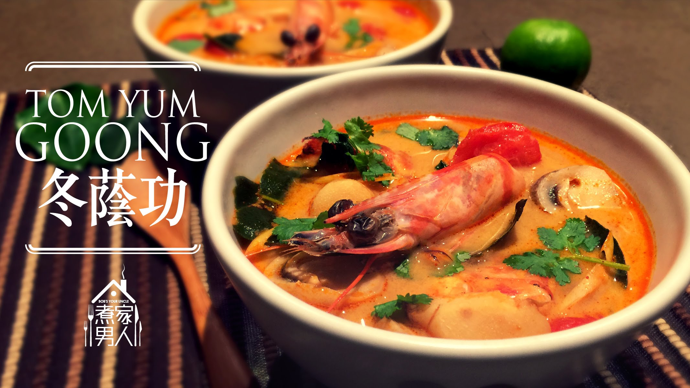

Peel and devein shrimp, reserving shells. Combine shrimp shells and 6 cups water in a Dutch oven; bring to a simmer. Cook 1 hour. Strain broth through a sieve into a bowl; discard solids. Combine broth and remaining 3 1/2 cups water in a large saucepan; bring to a boil. Add galangal, lemongrass, and kaffir lime leaves to pan; simmer 10 minutes. Strain broth mixture through a sieve into a bowl; discard solids. Return broth mixture to pan. Add mushrooms, chili paste, fish sauce, and chiles; bring to a boil. Stir in shrimp, green onions, and cilantro; cook 3 minutes or until shrimp are done. Discard chiles. Stir in fresh lime juice. Ladle 2 cups soup into each of 4 bowls; sprinkle evenly with peanuts. Serve with lime wedges.
Ready to eat!
| Contact Us | Follow Us |
| Phone Number:09421018986 Email:foodparadise@gamil.com |
Copyright © 2017,Food Paradise. All Rights Reserved.